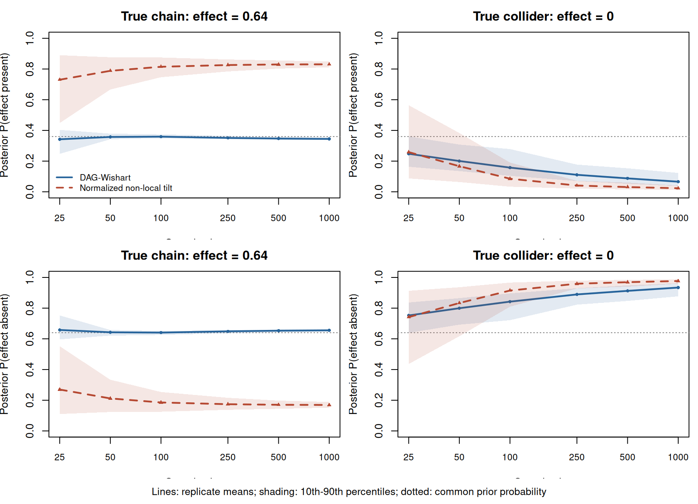

Code
imap_plot_effect_testing(effect_testing_results)
Estimating a causal effect when the causal graph is unknown brings together two sources of uncertainty: which structural relationships are present, and what their parameters imply for the intervention of interest. Structure learning and effect estimation are therefore closely connected. In Bayesian inference, the prior influences both the posterior distribution of the effect within a graph and the posterior weights assigned to different graphs.
The central aim is to develop parameterizations that permit flexible prior specification for a total causal effect when estimation also requires causal discovery. This flexibility matters for two reasons. First, prior choice can change the statistical behavior of model comparison and estimation. Non-local priors, whose densities vanish at a null effect, illustrate how the treatment of small effects can affect evidence accumulation (Johnson and Rossell 2010). Their properties in standard testing problems motivate an investigation in causal graph models; those properties do not automatically transfer to graph uncertainty or path cancellations. Second, substantive prior information is often available about an intervention’s effect rather than about the individual coefficients of an unknown DAG. A useful parameterization should make that information expressible in the quantity to which it refers.
Prior specification is particularly difficult when the graph itself is uncertain. Objective Bayesian approaches provide systematic constructions, including parameter priors designed to give the same marginal likelihood to Markov-equivalent DAGs (Geiger and Heckerman 2002; Peluso and Consonni 2020). This compatibility is valuable when the observational data do not distinguish causal orientations and the prior is intended to respect that symmetry.
There are three separate statements here. Markov-equivalent DAGs represent the same family of observational distributions, so corresponding parameter values give the same observational likelihood. Equality of their marginal likelihoods also requires compatible parameter priors. Equality of their posterior graph probabilities further requires equal prior graph probabilities. Observational equivalence alone implies neither of the latter two equalities.
Causal prior information can make a different symmetry appropriate. Consider
\[ \mathcal D_1:1\longrightarrow2\longrightarrow3, \qquad \mathcal D_2:1\longleftarrow2\longrightarrow3. \]
Both graphs impose \(X_1\perp X_3\mid X_2\), yet the effect of intervening on \(X_1\) differs. In the chain, \(\tau_{13}=B_{12}B_{23}\); in the fork, \(\tau_{13}=0\) for every parameter value. Prior knowledge that this effect is nonzero is therefore information about the causal models, even though their observational families coincide. Hard prior knowledge excludes the fork; softer knowledge can be expressed through graph odds, effect distributions, or both. It does not guarantee that any finite dataset will favor the chain under every resulting prior.
A related issue is the unit on which prior symmetry is imposed. Uniform mass over DAGs generally induces unequal mass over effect hypotheses, because different hypotheses can be represented by different numbers of graphs. Even the three orientations of the same path skeleton illustrate this: only \(1\to2\to3\) permits an effect of 1 on 3, whereas \(1\leftarrow2\to3\) and \(1\leftarrow2\leftarrow3\) imply a structural zero. Equal graph masses give prior mass \(1/3\) to an active effect model and \(2/3\) to a structural null. This is a consequence of the mapping from graphs to effects, rather than a logical inconsistency. It nevertheless shows why graph-level symmetry need not express neutrality about the causal question.
An effect coordinate complements compatible-prior methods by providing another point of control. The same parameter can represent \(\tau_{dy}\) in every candidate graph with a treatment-to-outcome path. Graphs without such a path remain a separate null component. Direct control over the active-effect distribution can then be combined with an explicit prior probability of that component.
A small Gaussian experiment illustrates the role of the parameter prior while keeping the graph prior fixed. Enumerate all 25 labeled DAGs on three nodes and target the effect of 1 on 3. In one scenario the true graph is \(1\to2\to3\), with both coefficients \(0.8\) and effect \(0.64\). In the other it is the collider \(1\to2\leftarrow3\), with both coefficients \(0.8\) and effect zero. Every error variance is one, and the means are known to be zero.
The baseline uses compatible DAG-Wishart shapes with \(a=8\), \(U=I_3\) and uniform graph masses. The alternative leaves the graph masses and structural-null parameter priors unchanged, and replaces each active-graph prior by the normalized non-local tilt
\[ \pi_M(\theta\mid\mathcal D) =\frac{\tau_{13}(\theta)^2}{E_0[\tau_{13}^2\mid\mathcal D]} \pi_0(\theta\mid\mathcal D). \]
Thus both analyses have the same prior effect-inclusion probability \(9/25\). An active graph has a directed path from 1 to 3. Under both continuous parameter priors, exact path cancellation has probability zero, so its posterior graph mass equals \(P(\tau_{13}\ne0\mid\mathbf X)\). The tilt suppresses parameter values near a null effect within an active graph. Its normalization and graph evidences are computed exactly (Section 6.6; Section A.7). Its effect marginal remains graph dependent; this is a tractable non-local example, not a construction of a common prescribed \(h\).
imap_plot_effect_testing(effect_testing_results)
At \(n=1000\), the mean posterior probability of an effect under the chain is 0.344 with DAG-Wishart and 0.831 with the non-local tilt. Under the collider, the respective mean probabilities of no effect are 0.934 and 0.977. The difference arises from the parameter priors, since graph masses and likelihoods are fixed across the analyses. At the smallest size the tilt does not improve null evidence on average; the example does not establish uniform superiority.
Identification limit. The chain’s observational distribution also has a causal fork representation \(1\leftarrow2\to3\) with zero target effect: take \(B_{21}=0.8/1.64\), \(B_{23}=0.8\) and error variances \((1/1.64,1.64,1)\). These give exactly the chain covariance. Consequently the entire distribution of the plotted probabilities would be the same if that fork generated the observations. A larger posterior effect probability expresses the combination of observational evidence and prior causal assumptions; it cannot establish an orientation from observational data alone. The plot is reproducible finite simulation evidence that priors matter for hypothesis probabilities, not a proof of general testing performance or causal identification.
The fully Bayesian workflow specifies a prior on the admissible I-MAP parameter space for each DAG, integrates its likelihood to score graphs, samples graph and parameter uncertainty, and transforms the draws into a posterior for the causal effect. Its computational requirements are substantial: an effect coefficient must be accompanied by a proper nuisance prior, a tractable marginal likelihood and a parameter sampler. The I-MAP construction provides the coordinate and model constraints; establishing unrestricted effect-prior specification and efficient computation is a further inferential problem.
The two-step workflow separates structure learning from effect estimation. Effect-informed graph learning supplies a distribution over candidate causal structures. A subsequent Bayesian regression uses an adjustment set chosen for the inferential objective. The intended link is a common prior on the active causal effect in both steps. This leaves room to choose adjustment sets by a prespecified loss, rather than fixing the regression to the original DAG parent set. Matching one prior marginal does not make the two procedures identical: their nuisance models and use of the data must also be specified.
The setting throughout is a fully observed, acyclic linear Gaussian system with independent errors, one treatment and one outcome. The original DAG is assumed to be causal. Gaussian factorization enables the construction, but does not remove observational ambiguity about that causal graph.
| ID | Question | Relevant analysis |
|---|---|---|
| Q001 | What should the I-MAP parameterization explain or predict? | Direct effect-prior specification while preserving the sparse model: Chapter 3; Chapter 5. |
| Q002 | When does an ordered I-MAP expose the total effect, and how are its parameters computed? | Outcome-parent theorem and adjacent transposition: Chapter 5; Appendix A. |
| Q003 | Which constraints retain the original sparse Gaussian DAG model? | Restored missing-edge equations: Section 5.5; Section A.2. |
| Q004 | How can a proper effect-centered prior and marginal likelihood be constructed? | Prior domains, evidence and sampling: Chapter 6. |
| Q005 | What loss defines Bayesian optimal adjustment under graph uncertainty? | Two-step inference, posterior risk and validity: Chapter 7. |
| Q006 | How does the construction compare with existing causal parameterizations? | Frugal coordinates and sparse-model restrictions: Section 2.3.1. |